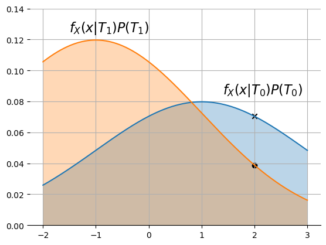

Point Conditioning
Contents
import numpy as np
import numpy.random as npr
import scipy.stats as stats
def q(x):
return stats.norm.sf(x)
import matplotlib.pyplot as plt
%matplotlib inline
10.2. Point Conditioning#
In this section, we build upon some of the concepts from Section 8.9, where we began to study conditioning with random variables. We often have cases where the observed output of a system is best modeled as a random variable, and we would like to make decisions based on the observed value of the random variable. However, if the output is a continuous random variable, then our previous approaches break down because the probability of a continuous random variable taking on any particular value is zero.
Let’s return to the example of a binary communication system introduced in Section 8.9, for which the output is conditionally Gaussian given the input. In particular, the output random variable has conditional distributions given by
Let \(T_i\) denote the event that \(i\) is transmitted. As in Section 7.3, we want to determine the probabilities of the inputs given the observed value of the output. The difference is that in Section 7.3, the output was a discrete event, whereas now we observe a particular value of a continuous random variable: we observe some received value \(X=x\).
We would like to calculate the probabilities of \(T_0\) and \(T_1\) given an observation \(X=x\). The form of these probabilities may look familiar: we are asking about probabilities of the form \(P(T_i|X=x)\). This is the probability of an input given the observation or output, and hence is an a posteriori probability (APP). Given the APPs, we would also like to find the maximum a posteriori (MAP) decision rule.
Let’s revisit the example from Section 8.9 to identify the issue:
Example
Suppose that we want to calculate probability of the events \(T_0\) and \(T_1\) given that \(X=2\) if \(P(T_0)=0.4\), \(P(T_1)=0.6\), and \(\sigma=2\). A direct application of our previous Bayes’ rule approaches yields
This is problematic because \(P(X=2|T_0)=0\) and \(P(X=2)=0\), so the fraction is 0/0.
This problem is caused by conditioning on an event that has zero probability. But keep in mind that every time that \(X\) is received it takes on some value with zero probability. Being able to answer this type of question is important, but we don’t have the math to deal with it yet. This type of conditional probability is called point conditioning:
DEFINITION
- point conditioning#
Point conditioning occurs for a conditional probability if the conditioning statement is (or includes) the event that a continuous random variable is equal to a particular value. I.e., \(P(A|X=x)\), where \(X\) is a continuous random variable.
We can evaluate a conditional probability with point conditioning, by treating it as a limit and doing some careful manipulation:
if \(f_X(x|A)\) and \(f_X(x)\) exist, and \(f_X(x) \ne 0\). Taking the limit in the numerator and denominator yields
(The result looks like what you would do if you didn’t know any better – treat the densities as if they were probabilities, and everything works out!)
10.2.1. Total Probability for Continuous Distributions#
Note that the form above is almost a Bayes’ rule form. If \(A\) is some input event and \(X\) is the observed output, then \(f_X(x|A)\) is the likelihood of \(X\) given \(A\):
DEFINITION
- likelihood; discrete-input, continuous-output stochastic system#
Consider a stochastic system with a discrete set of possible input events \(\{ A_0, A_i, \ldots \}\) and a continuous output random variable \(X\), where the dependence of \(X\) on \(A_i\) can be expressed in terms of the likelihoods \(f_X(x|A_i)\).
Then the likelihood is the conditional density of the output given that the input was \(A_i\), \(f_X(x |A_i)\).
In this context, the conditional probability \(P(A|X=x)\) is the a posteriori probability of \(A\) given that the output of the system is \(X=x\). However, in Bayes’ rule the denominator usually needs to be found using total probability, but we do not yet have any Law of Total Probability for point conditioning.
In the binary communication system example, we can use the partitioning events \(\{T_0, T_1\}\). We can easily create a general Total Probability rule for CDFs because CDFs are probability measures:
Total Probability for CDFs
If \(\left\{A_i\right\}\) form a partition of \(S\), then from our previous work on the Law of Total Probability, we have
Total Probability for pdfs
To derive a similar rule for pdfs, we note that \( f_X(x) = \frac{d}{dx} F_X(x)\) and \(f_X(x|A_i) = \frac{d}{dx} F_X(x|A_i)\). Substituting the Total Probability for CDFs into the definition of the pdf \(f_X(x)\) yields
The equation is almost identical to the equation for the Total Probability for CDFs, except CDFs (denoted by \(F\)) are replaced by pdfs (denoted by \(f\)) everywhere.
Total Probability for Events with Point Conditioning
We have one more case that often arises, which is when we wish to calculate the probability of some event when we know the probability of that event given the value of some continuous random variable. Consider again the point-conditioning form for the probability of an event, which we found in (10.1),
Multiplying both sides by \(f_X(x)\) and integrating over \(x\) yields
where on the right side, we have pulled out \(P(A)\) from the integral because it does not depend on \(x\). The remaining integral on the right evaluates to 1 because it is the integral of a density from \(-\infty \) to \(\infty.\) Swapping the two sides yields
Bayes’ Rule for the Probability of an Event Under Point Conditioning:
We are now ready to finish deriving a general formula for Bayes’ rule for scenarios in which the observation is a continuous-valued random variable for which the distribution depends on some discrete underlying hidden state. Examples include the binary communication system described at the beginning of this section and many types of sensing systems, such as when the sensor output (e.g., sound, RADAR, or seismic) depends on whether some type of vehicle is present. A generic formulation of this type of problem is as follows:
Let \(\{A_i, ~i=0,1,\ldots, n-1\}\) be a partition of \(S\); for instance, if \(\{A_i\}\) represent all of the different values of the hidden state, and no two values of \(\{A_i\}\) can occur at the same time, then \(\{A_i\}\) will be a partition of \(S\). Let \(X\) be some random variable for which we know the conditional density given \(A_i\) occurred for each \(i=0,1,\ldots, n-1\). Then we can use (10.4) in (10.1) to get Bayes’ Rule for this case:
DEFINITION
- a posteriori probability; discrete-input, continuous-output stochastic system#
Consider a stochastic system with a discrete set of possible input events \(\{ A_0, A_i, \ldots \}\) and a continuous output random variable \(X\), where the dependence of \(X\) on \(A_i\) can be expressed in terms of the likelihoods \(f_X(x|A_i)\).
Then the a posterior probabilities are the conditional probabilities of the input events given the observed outputs:
Let’s see how to use this to find the a posteriori probabilities in our communications example.
Example
Consider again the binary communication system with \(P(T_0)=0.4\) and \(P(T_1)=0.6\) if \(\sigma=2\). If \(X=1\) is received, what is the conditional probabilities for \(T_0\) and \(T_1\)?
We have to use point conditioning because \(P(X=2) =0\). Thus, we will specialize (10.5) as
where we can evaluate the particular probabilities by plugging in the values specified. Before we do that, let’s try to gain some intuition about this formula. First, note that the denominator is the same for both \(P(T_0|X=x)\) and \(P(T_1|X=x)\). It can be considered a normalization constant. So, let’s start by comparing the un-normalized numerator values. Below, I have plotted \(f_X(x|T_0)(0.4)\) and \(f_X(x|T_1)(0.6)\) and indicated the values at \(x=2\) with markers:
sigma=2
p0=0.4
G0=stats.norm(loc=1,scale=sigma)
G1=stats.norm(loc=-1,scale=sigma)
x=np.linspace(-2,3,1001)
p1=1-p0
# plot the weighted densities:
# these are proportional to the APPs
plt.plot(x,p0*G0.pdf(x))
plt.plot(x,p1*G1.pdf(x))
# Fill under the regions found above
plt.fill_between(x,p0*G0.pdf(x),alpha=0.3)
plt.fill_between(x,p1*G1.pdf(x),alpha=0.3)
ax=plt.gca()
ax.spines['top'].set_visible(False)
ax.spines['right'].set_visible(False)
ax.spines['left'].set_visible(False)
#ax.get_yaxis().set_ticks([]);
plt.annotate('$f_X(x|T_0)P(T_0)$', (1.4,0.085), fontsize=16)
plt.annotate('$f_X(x|T_1)P(T_1)$', (-1.5,0.125), fontsize=16);
plt.ylim(0, 0.14)
plt.grid()
plt.scatter(2, G0.pdf(2)*0.4, marker='x', color='k')
plt.scatter(2, G1.pdf(2)*0.6, marker='o', color='k');

From the graph, \(f_X(2|T_0)P(T_0) \approx 0.75\) and \(f_X(2|T_1)P(T_1) \approx 0.4\), so we can conclude that \(P(T_0|X=2)\) is greater than \(P(T_1|X=2)\) by a factor of approximately \(0.75/0.4 = 1.875\). Let’s check out the exact values using (10.5). The denominator is
den=G0.pdf(2)*0.4 + G1.pdf(2)*0.6
den
0.10926834405262742
The conditional probability of \(T_0\) given \(X=2\) is then
pT0_2 = G0.pdf(2)*0.4/den
pT0_2
0.6444049826448045
and the conditional probability of \(T_1\) given \(X=2\) is
pT1_2 = G1.pdf(2)*0.6/den
pT1_2
0.3555950173551955
and the ratio is
pT0_2/pT1_2
1.8121878856393636
which matches our approximation from the graph.
As in the example of a binary communication system with discrete outputs, the a posteriori probabilities provide information about the probabilities of the inputs given the observed output, and these are useful for optimal decision making, which we consider in the next section.